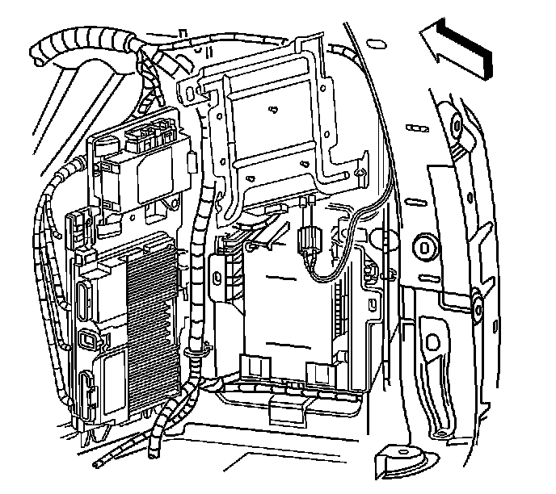
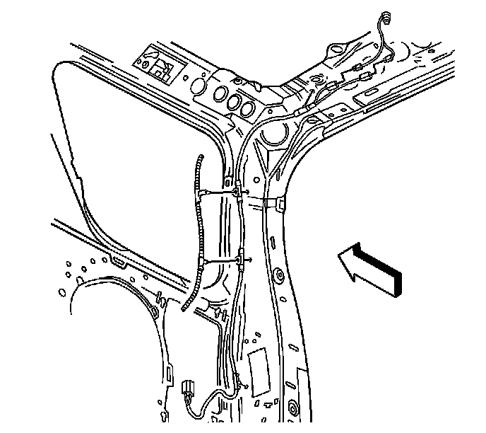

Antenna Cable: Service and Repair
Digital Radio Antenna Cable Replacement
Removal Procedure
1. Remove the right rear body side trim. Refer to Body Side Rear Trim Panel Replacement (w/TB5) (Service and Repair)Body Side Rear Trim Panel Replacement (w/o TB5) (Service and Repair) .
2. Remove the right rear body side garnish molding. Refer to Body Side Rear Upper Garnish Molding Replacement (w/TB5) (Service and Repair)Body Side Rear Upper Garnish Molding Replacement (w/o TB5) (Service and Repair) .
3. Remove the headliner. Refer to Headlining Trim Panel Replacement (Service and Repair) .

4. Disconnect the digital antenna connector from the receiver.

5. Disconnect the digital antenna cable connector from the antenna.
6. Remove the cable.
Installation Procedure
1. Install the cable to the vehicle.
2. Connect the digital antenna cable connector to the antenna.
3. Connect the digital antenna connector to the receiver.
4. Install the headliner. Refer to Headlining Trim Panel Replacement (Service and Repair) .
5. Install the right rear body side garnish molding. Refer to Body Side Rear Upper Garnish Molding Replacement (w/TB5) (Service and Repair)Body Side Rear Upper Garnish Molding Replacement (w/o TB5) (Service and Repair) .
6. Install the right rear body side trim. Refer to Body Side Rear Trim Panel Replacement (w/TB5) (Service and Repair)Body Side Rear Trim Panel Replacement (w/o TB5) (Service and Repair) .